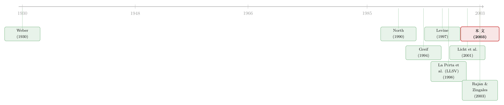

宗教没写进合同，却写进了债权人的权利
本文读的是 Stulz & Williamson (2003, Journal of Financial Economics)：在控制了人均收入、法律起源、语言之后，一个国家的主要宗教仍能稳健地预测它对债权人的保护——天主教国家的债权人权利显著弱于新教国家；而一个国家「天生的开放度」会冲淡宗教的这种负面影响。文化，不是法律起源的影子，它自己就在给金融定价。
1 一个绕不开、却一直被绕开的问题
先说一个几乎已成定论的事实：金融发展能推动经济增长。Levine (1997) 在他那篇著名的综述里把证据摆得清清楚楚。可一旦你追问下去——为什么有的国家金融市场发达、企业能轻松融到外部资金，有的国家却始终长不出像样的资本市场——答案就开始变得模糊。
La Porta、Lopez-de-Silanes、Shleifer 和 Vishny（下称 LLSV）给出过一个极有影响力的回答：投资者保护 (investor protection)。投资者越是不必担心被经理人、控股股东或政府「巧取豪夺 (expropriation)」，他们就越愿意把钱交出去，市场也就越繁荣。而在 LLSV (1998) 的框架里，决定一国投资者保护强弱的，是它的法律起源 (legal origin)——普通法 (common law) 国家保护得好，大陆法 (civil law) 国家保护得差。
这套「法律与金融」的故事讲得太漂亮，以至于它几乎垄断了讨论。但本文的两位作者——Stulz 和 Williamson——却在这里停了下来，问了一个让人有点不安的问题：
法律起源，会不会本身就是一种文化的产物？
这不是凭空发难。早在 Merryman (1985) 就说过，「法律传统把法律体系与它所部分表达的那个文化联系在一起」。换句话说，如果你只看到「法律起源很重要」，你可能看到的，只是文化在金融上投下的影子。要判断文化是否独立于法律起源、在金融里还有自己的一份功劳，就得把文化拎出来，直接地、单独地检验它。
这正是本文要做的事。
2 为什么是宗教和语言
要检验「文化」，第一道坎是：文化怎么度量？
作者借了 North (1990) 转引自 Boyd and Richerson (1985) 的定义——文化是「通过教导与模仿、代代相传的知识、价值观以及其他影响行为的因素」。这个定义很大，大到没法直接放进回归。于是作者做了一个在方法论上极其克制的选择：只用两个最简单的代理变量——宗教 (religion) 与语言 (language)。
为什么是这两个？理由有三层，值得展开讲，因为这恰恰是全文最聪明的地方。
首先，是理论上的根。 自 Weber (1930) 起,「宗教塑造资本主义」就是一条有分量的传统。而宗教对债权人的态度，历史上是写得明明白白的。Tawney (1954) 指出，中世纪教会把高利贷 (usury)——可以简单理解为「对借出的钱收取利息」——视为根本性的罪。1274 年的里昂会议甚至规定：谁把房子租给放贷者，谁就要被逐出教门。而加尔文宗改革 (Calvinist Reformation) 把支付利息视为商业的正常组成部分，现代债务市场才得以发育。改革之后，新教与天主教国家在债权人权利上分道扬镳。
注意作者论证的精巧：宗教历史上对债权人说得多、对股东说得少。这条线索后面会变成一个可证伪的预测——文化应当更能解释债权人权利，而非股东权利。结果也确实如此。
接着，是过拟合 (overfitting) 的担忧。 样本只有 49 个国家。如果你像有些研究那样塞进一大堆文化维度，总能凑出某种组合「显著地」解释了投资者权利的差异——但那很可能是虚假的。宗教和语言这两个粗糙的代理，反而因为简单而稳健，且在社会科学里早有先例。
然后，是反向因果 (reverse causation)。 一国今天的金融发展，很难反过来决定它的主要宗教或主要语言。这就把那个困扰所有跨国研究的内生性幽灵，挡在了门外一大半。
作者把宗教和语言定义为：一国人口中占比最大的那个。注意,这与 LLSV (1999) 不同——后者用的是「信某教的人口比例」这种连续变量。作者的逻辑是:如果宗教重要，那么占主导的那个宗教对一国应当有独特的影响，而不是随信徒比例线性增长。
3 数据：站在 LLSV 肩膀上
识别策略说穿了并不复杂，它是一组横截面回归 (cross-sectional regression)：被解释变量是 LLSV (1998) 那套广为人知的投资者权利指标，解释变量是宗教、语言，外加法律起源、人均收入、开放度等控制变量。
- 样本：49 个国家，覆盖亚、欧、南北美、非、澳。入样门槛是 1993 年至少有 5 家无政府持股的非金融上市公司。不含前社会主义国家。
- 核心变量来源：法律家族、股东权利、债权人权利、法治 (rule of law) 指数,全部取自
LLSV (1998)。文化变量（语言、宗教）来自2000 CIA Factbook等来源。 - 观测单位：国家。回归里因变量的观测数就是国家数。
这里有个朴素但要紧的细节：作者坦承大陆法内部其实还分斯堪的纳维亚、德国、法国三支，理论上该分开比较。但 49 个国家分下去，每个格子样本太小，没法做。于是他们沿用 LLSV 的惯例,把大陆法整体对照普通法，并在第 6 节专门验证这个简化不影响主要结论。
4 核心发现：宗教，赢过了法律起源
现在到了反转出现的地方。
把股东权利和债权人权利分开看，故事完全不同——而这种「不同」本身，恰恰印证了第 2 节那个理论预测。
第一，债权人权利。 这是本文最强的结果。即便控制了法律起源,一国的主要宗教仍与 LLSV 债权人权利指数 (creditor rights index) 强相关：主要宗教为新教的国家,债权人权利显著强于天主教国家——且与法律起源无关。更锋利的一刀切在大陆法内部：普通法新教国家与大陆法新教国家之间,债权人保护没有差别;但在大陆法国家内部,天主教国家与新教国家之间,差别很大。也就是说,把「法律起源」这个变量摁住不动,宗教依然能把债权人权利劈成两半。
这里还藏着一个意外：非基督教国家的债权人权利指数,竟然比新教国家还高。作者没有回避,而是给了一个「制度变迁缓慢」的解释——这些高分国家,多是 20 世纪曾被新教国家殖民的地方。制度被移植进来,然后留存了下来。
第二,股东权利。 这里 LLSV 的那套股东权利总指数与文化代理在控制法律起源后不相关。但有意思的是,一旦把指数拆成单项权利,文化又活了过来:天主教国家更可能拥有优先认购权 (preemptive rights) 和累积投票 (cumulative voting),而新教与英语国家更可能拥有指数里的其他那些权利。两边在指数上互相抵消,所以总指数看不出文化的影子——但底层并非没有结构,只是结构被加总「洗」掉了。
第三,权利的执行 (enforcement)。 当我们看的不再是「纸面上写了什么权利」,而是「这些权利被执行得好不好」时,宗教、语言、法律起源全都起作用了。新教国家的权利执行优于天主教国家——不过对某些变量,一旦也让语言进场,这个差别就消失了。
总结成一句话:法律起源解释股票市场的发展,文化解释债务市场与银行业的发展。 具体到一个可量化的事实——相对于 GNP 的债务发行量,天主教国家显著小于新教国家。债,确实是宗教说话最响的地方。
5 开放度:文化的「解药」
到这里你可能会担心:如果一国的金融命运被几百年前的宗教锁死,那也太宿命了。
本文最有政策含义的一节,正是要松开这个结。作者提出:当文化对投资者权利不利时,这种不利应当随一国从国际贸易中获益的能力而下降。 三个机制——
第一,要享受贸易的好处,你得把权利执行好,否则外国贸易伙伴不敢和你签约; 第二,贸易越多,外来影响越多,本土文化的影响被稀释; 第三,贸易带来外部竞争,本国企业会反过来游说,去改掉那些让它们竞争不过别人的制度。
一个不太可能从对外往来中获益的国家,才更负担得起一种「集体目标凌驾于契约权利之上」的文化。
实证上,作者用一国天生的开放度 (natural openness)——这是个关键的方法选择——来度量贸易潜力。所谓「天生」,是指由地理（国家大小、与他国的距离等）决定的、本应有多少贸易,而不是实际观测到的贸易量。后者会内生于金融发展,前者则是外生的。结果:开放度与债权人权利、与权利执行正相关,却与股东权利负相关。 而且,开放度确实削弱了宗教对债权人权利的负面影响——文化不利的国家,越开放,这份不利越轻。
6 文献脉络
把这篇论文放回它的谱系里,线索其实很清晰。
源头是 Weber (1930):新教伦理塑造了资本主义精神。这条「文化决定论」的线后来有 North (1990) 把文化定义为指导日常互动的非正式约束,有 Greif (1994) 用 11 世纪马格里布商人与 12 世纪热那亚商人的对比,论证「社会组织方式的差异可以一致地归因于不同的文化信念」。
与此同时,另一条「法律与金融」的线在 1990 年代末爆发:Levine (1997) 确立金融发展促进增长,LLSV (1998, 2000) 用法律起源解释投资者保护的跨国差异,几乎定义了整个领域的语言。

本文站在这两条线的交叉口。它不否认法律起源重要,而是追问:法律起源会不会本身就是文化的表达?它给出的答案是——文化(尤其是宗教)在债务市场上有独立于法律起源的解释力。几乎同时,Licht et al. (2001) 用 Schwartz 和 Hofstede (1980) 的文化分类做了互补的检验,得出文化与权利指数相关的结论;而 Rajan and Zingales (2003) 则强调政治——政客有时挺市场、有时不挺,大陆法体系让激进变法更容易。本文恰好处在「文化—法律—政治」三方拉锯的中心。
这条「制度起源」的脉络,后来也长出了一支专门研究「外资能否租用别国法律」的文献——既然本国的制度被文化与历史锁定,那把股票挂到一个保护更强的国家去,是不是就能「借」来更好的治理?(关于这一点,可参见《租来的法律：把股票挂到纽约，真能管住自家的老板吗？》与《把股票挂到纽约，老板就少偷一点》。)而「英美式发债 vs 德国式找银行」这条分岔,也正是本文「债务市场被文化塑造」结论的一个延伸场景(见《为什么英国人发债，德国人却找银行？》)。
7 评论与延伸（Q&A + 研究方向）
(a) 几个可能的疑问
Q：宗教和语言,凭什么不是法律起源的「马甲」?
这正是本文识别策略的要害,作者用「条件相关」来回答。他们在回归里同时放入法律起源和文化代理:如果文化只是法律起源的影子,那在控制法律起源后文化应当变得不显著。结果相反——在大陆法国家内部,天主教与新教在债权人权利上仍有大差别。文化的解释力,是法律起源「拿不走」的那一部分。
Q：那股东权利总指数和文化不相关,岂不是说文化没用?
恰恰是这一点让论证更可信而非更可疑。作者从 Weber、Tawney 那条历史线事先预测:宗教对债权人说得多、对股东说得少。债权人权利强相关、股东权利总指数不相关,正符合这个预测。而把股东权利拆成单项后,天主教偏好优先认购权与累积投票、新教偏好其他权利——两类在总指数里互相抵消。这是「结构被加总洗掉」,不是「文化不起作用」。
Q：用「占比最大的宗教」当代理,会不会太粗?
作者是有意为之,且和 LLSV (1999)、Beck et al. (2000, 2001) 用「信徒比例」的做法刻意区分。他们的理论是:主导宗教对一国有独特的、非线性的影响,不该随信徒比例线性递增。他们也在第 6 节验证,换用比例式度量不改变主要结论。粗,是为了防过拟合——49 个国家经不起精细切。
Q：「开放度」会不会本身就内生于金融发展?
这是最关键的一处设计。作者不用实际贸易量(它确实会内生),而用 Frankel and Romer (1999)、Wei (2000) 那一路的天生开放度——由地理(国家大小、与他国距离)决定的、本应有多少贸易。地理是外生的,这就大大缓解了「金融发达→贸易多→看起来开放」的反向因果。
Q：非基督教国家债权人权利反而最高,这不打脸吗?
表面反直觉,作者却把它收进了同一个框架。这些高分国家多是 20 世纪被新教国家殖民的地方,制度被移植后留存——这反而印证了「制度变迁缓慢、文化通过历史路径起作用」。它是对「文化经由历史持久地塑造制度」的一个佐证,而非反例。
Q：这对「应不应该全世界推广英美模式」的争论意味着什么?
意味着要谨慎。如果投资者保护部分地由文化和历史决定,那么把英美式制度生硬移植到一个文化不相容的国家,未必能落地——同样的正式规则在不同社会里会产生不同结果(这正是 North 1990 的论点)。但本文也给了希望:开放度能稀释文化的负面影响,所以「促进贸易开放」可能是比「照搬法条」更现实的改革杠杆。
(b) 几个可能的研究问题与提案
1. 用债券微观数据重做「文化—债权人权利」的检验
【经济故事】本文停在国别层面的「纸面权利」与 GNP 占比。但债权人权利真正咬人的地方,是违约与破产时债权人能拿回多少、拿得多快。如果天主教文化确实弱化债权人保护,这应当体现在信用利差、回收率 (recovery rate)、违约后债权人控制权上。
【可行性】中。跨国公司债数据(如 Markit、Refinitiv)可得,但破产程序数据各国口径不一,识别要靠在同一法律起源内对比不同主导宗教的国家——本文已证明这个对比有变异。难点是把宗教的「慢变量」与当代监管改革分离开。
2. 外资持有人:会不会就是「开放度稀释文化」的微观渠道?
【经济故事】本文说开放度削弱文化的负面影响,但机制是黑箱。一个具体的传导渠道可能是外国投资者的持股/持债:外资进来,既带来对更强保护的需求,又带来用脚投票的压力。能否直接检验——外资持有比例上升,是否随后伴随债权人保护或执行的改善?
【可行性】中高。跨国机构持有数据(如 FactSet、各国央行 IIP)可得;识别可借助指数纳入、资本账户开放等外生冲击。这条线与流动性、外资行为研究天然贴合,doable。
3. 宗教冲击的「准自然实验」
【经济故事】横截面回归最大的软肋是内生性与遗漏变量。能不能找到宗教构成发生外生变动的历史事件——殖民、移民潮、宗教改革的边界——来识别宗教对金融的因果?O'Rourke (2002) 用丹麦与爱尔兰乳业的对比已是雏形。
【可行性】低到中。真正干净的宗教外生冲击稀少,历史数据残缺,且金融变量在历史上度量困难。更可能做成精致的历史个案,而非大样本因果。诚实地说,这条路很硬。
4. 文化与债务期限/合约结构
【经济故事】如果天主教文化让「集体之善凌驾于契约」,那它可能不只压低债权人权利的水平,还会改变债务的形态——比如更依赖关系型银行信贷而非公开市场债券、更短的期限、更多的政府介入。本文已发现「债务市场与银行业由文化塑造、股票市场由法律起源塑造」,这是一个现成的延伸。
【可行性】高。世界银行与 BIS 的银行/债券市场结构数据按国别可得,可直接在本文的回归框架上加因变量。是本文最容易接着做的一步。
8 我的判断
贡献。 这篇论文的价值,不在于「证明了文化重要」——这话 Weber 讲了快一个世纪。它的贡献是方法论上的克制与锋利:在法律与金融文献如日中天、几乎把一切都归给法律起源的时候,作者用两个最朴素的代理(宗教、语言)、一套老老实实的横截面回归,干净地剥出了文化独立于法律起源的那一份解释力,而且把它精确地定位在债务市场而非股票市场。「债权人权利被宗教劈成两半,即便在同一法律起源内部」这个结果,既稳健又符合事先的历史预测,是全文最有说服力的一击。
对识别的担忧。 我最不放心的有两点。其一,49 个国家的横截面,样本太小,遗漏变量与多重共线性的风险始终在场——作者用「简单代理防过拟合」来回应,这是诚实的,但终究换不来因果。其二,宗教与无数其他慢变量(殖民史、地理、人口、早期国家能力)高度纠缠,横截面回归很难把宗教从这团乱麻里因果地抽出来。「天生开放度」那一节的工具思路是全文识别最干净的部分,但宗教本身缺一个类似的外生来源。
后续想看什么。 我最想看的,是把这套「文化—债务」的逻辑从纸面权利推进到违约时的真实回收与外资进入的微观传导(即上面提案 1、2)。如果天主教文化真的弱化债权人保护,那它应当在一场真实的破产、一次真实的资本外流里留下指纹。能在债券微观数据里抓到这枚指纹,这条二十年前提出的命题,才算真正落地。
参考文献
- Beck, T., Levine, R., Loayza, N. (2000). Finance and the sources of growth. Journal of Financial Economics 58, 261–300.
- Boyd, R., Richerson, P.J. (1985). Culture and the Evolutionary Process. University of Chicago Press, Chicago.
- Coffee, J.C. (2001). Do norms matter? A cross-country examination of the private benefits of control. Working paper, Columbia Law School.
- Ekelund Jr., R.B., Hébert, R.F., Tollison, R.D. (2002). An economic analysis of the Protestant reformation. Journal of Political Economy 110, 646–672.
- Frankel, J., Romer, D. (1999). Trade and growth: an empirical investigation. American Economic Review 89, 379–399.
- Greif, A. (1994). Cultural beliefs and the organization of society: a historical and theoretical reflection on collectivist and individualist societies. Journal of Political Economy 102, 912–950.
- La Porta, R., Lopez-de-Silanes, F., Shleifer, A., Vishny, R.W. (1998). Law and finance. Journal of Political Economy 106, 1113–1155.
- La Porta, R., Lopez-de-Silanes, F., Shleifer, A., Vishny, R.W. (1999). The quality of government. Journal of Law, Economics, and Organization 15, 222–279.
- La Porta, R., Lopez-de-Silanes, F., Shleifer, A., Vishny, R.W. (2000). Investor protection and corporate governance. Journal of Financial Economics 58, 3–27.
- Levine, R. (1997). Financial development and economic growth: views and agenda. Journal of Economic Literature 35, 688–726.
- Licht, A.N., Goldschmidt, C., Schwartz, S.H. (2001). Culture, law, and finance: cultural dimensions of corporate governance laws. Working paper, Interdisciplinary Center Herzliya.
- Merryman, J.H. (1985). The Civil Law Tradition. Stanford University Press, Stanford, CA.
- North, D.C. (1990). Institutions, Institutional Change and Economic Performance. Cambridge University Press, Cambridge.
- O'Rourke, K.H. (2002). Culture, politics and innovation: evidence from the creameries. CEPR working paper No. 3235.
- Rajan, R., Zingales, L. (2003). The great reversals: the politics of financial development in the 20th century. Journal of Financial Economics 69, 5–50.
- Stulz, R.M., Williamson, R. (2003). Culture, openness, and finance. Journal of Financial Economics 70(3), 313–349.
- Tawney, R.H. (1954). Religion and the Rise of Capitalism. Harcourt, Brace & World, New York.
- Weber, M. (1930). The Protestant Ethic and the Spirit of Capitalism. HarperCollins, New York.
- Wei, S.-J. (2000). Natural openness and good government. NBER working paper No. 7765.